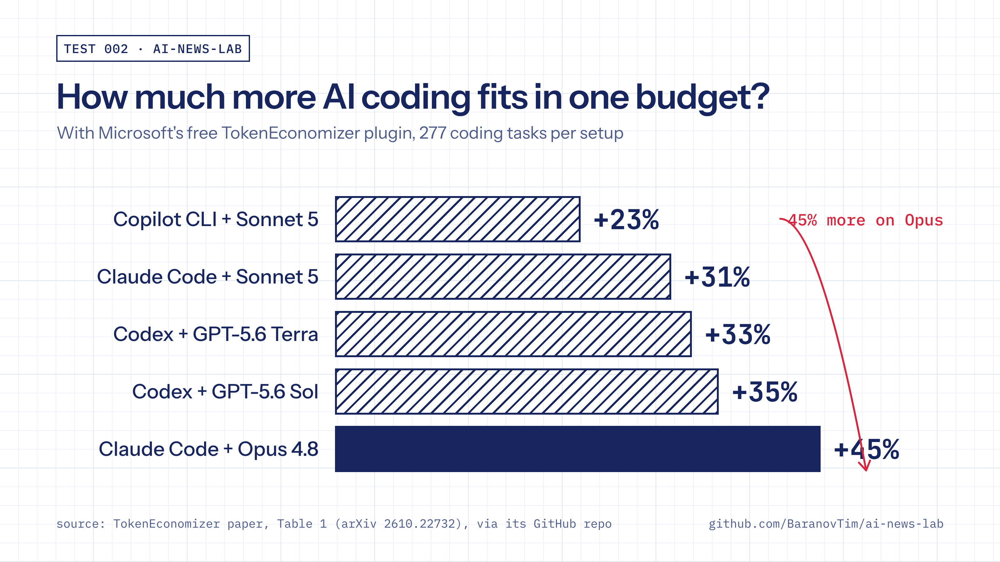

How much more AI coding fits in one budget?
Microsoft's published numbers check out: 18.4% to 30.9% cheaper across 5 setups. Turned around, the same money or usage limit covers 23% to 45% more work, and the most on Claude Code with Opus 4.8.
45% more on Opus
What I tested
A post about TokenEconomizer, a free plugin from Microsoft and UC Berkeley for Claude Code, Codex and Copilot CLI, went around X today with the claim "18.4% to 30.9% lower cost". I took the five per-setup numbers the project publishes (the paper's Table 1, as plotted in its GitHub repo) and checked them against the numbers written out in its README. Both copies match, and the smallest and biggest saving match the headline.
Then I turned "X% cheaper" into the question people actually have: how much more can I get done before I run out? If each task costs 30.9% less, the same budget pays for 1 / (1 - 0.309) = 1.45 times as many tasks, so about 45% more.
Results
| Setup | Cheaper | More work, same budget | Tasks solved |
|---|---|---|---|
| Claude Code + Sonnet 5 | 23.6% | +31% | 74.7% → 76.0% |
| Claude Code + Opus 4.8 | 30.9% | +45% | 74.0% → 73.0% |
| Codex + GPT-5.6 Terra | 24.7% | +33% | 73.8% → 74.7% |
| Codex + GPT-5.6 Sol | 26.1% | +35% | 80.1% → 81.7% |
| Copilot CLI + Sonnet 5 | 18.4% | +23% | 75.0% → 77.6% |
Tasks solved went up in 4 of 5 setups. The average saving is 24.7%.
Limits
These are Microsoft's own benchmark numbers, not a new run: I checked them and did the math, I didn't rerun 277 tasks. The plugin learns from earlier sessions in the same project, so the savings are for people who keep working in one repo (on brand-new repos the paper reports 6% to 20%). "More work" assumes your usage limit tracks cost, which is close but not exact for subscription plans.
Run it yourself
The code and the saved source files are on GitHub: ai-news-lab/2026-11-16-tokeneconomizer-savings. Run python main.py, or python main.py --refresh to download the numbers from the TokenEconomizer repo again.